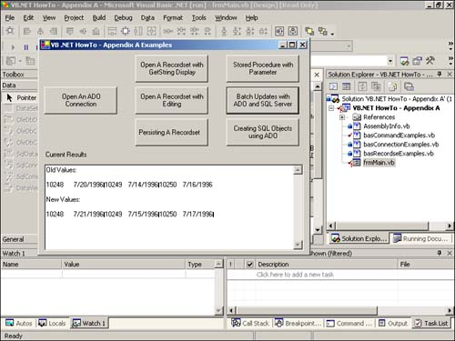

The biggest difference between this section and the previous one is the fact that in the last section, a recordset being populated using a Command object. With the Command object, no data was affected. That is one type of use for a Command object. What if you want to perform bulk tasks against a recordset? This is the major use for using the Command object because you don't necessarily need it for populating a recordset. The Parameter object is also not used. It was not necessary for the example, although you would want to use it if criteria were being implemented.
To learn how to perform a bulk operation using ADO in Visual Basic .NET, see this simple Update SQL statement, shown here:
Update Orders Set ShippedDate = DeliveryDate+1
This statement adds a day to the date in the ShippedDate column for all the records in the Orders table.
This statement is being assigned to the CommandText property of the Command object instead of to the name of a stored procedure. Another important task is setting the CommandType property to be ADODB.CommandTypeEnum.adCmdText. This tells ADO that you are performing a bulk operation. Last, the Execute method is called from the Command object. This routine, called ExecuteABatchCommand, can be seen in Listing A.9.
Sub ExecuteABatchCommand(ByVal txtResults As TextBox)
Dim cnn As New ADODB.Connection()
Dim cmd As New ADODB.Command()
Dim prm As ADODB.Parameter
Dim rstOld As New ADODB.Recordset()
Dim rstNew As New ADODB.Recordset()
'-- In .NET, we can assign values as we declare variables
Dim strSQL As String = "Update Orders Set ShippedDate = ShippedDate+1"
Dim strDispSQL As String = _
"Select OrderID, ShippedDate From Orders Where OrderID < 10251"
'-- Open the connection
OpenNorthwindADOConnection(cnn)
'-- Open the Orders table and display the ShippedDate as they were.
rstOld.Open(strDispSQL, cnn)
txtResults.Text = "Old Values: " & vbCrLf & vbCrLf & rstOld.GetString
'-- Set up the Command object to use the SQL string.
cmd.ActiveConnection = cnn
cmd.CommandText = strSQL
cmd.CommandType = ADODB.CommandTypeEnum.adCmdText
'-- Execute the command
cmd.Execute()
'-- Reopen the Orders table and redisplay the ShippedDate Field
rstNew.Open(strDispSQL, cnn)
txtResults.Text = txtResults.Text & vbCrLf & vbCrLf & "New Values: " &
vbCrLf & vbCrLf & rstNew.GetString
End Sub
For this example recordset, objects were used merely to display the before and after data, as seen in Figure A.6.

You can also use the Insert and Delete statements to perform other bulk operations with the Command object. One of the last tasks that is useful to perform using ADO with SQL Server is to create objects such as tables on-the-fly.